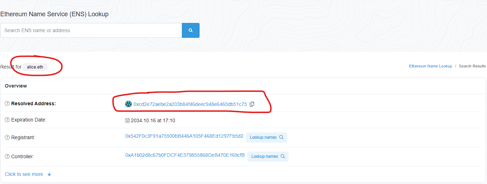

Wow. It’s been a while since I actually learned something new about crypto. This is something that has been on my radar for a while - Ethereum Name Service, or ENS for short. My goal in this blog post is to cover it at a consumer level rather than a developer level, although I do dig into the details sometimes in this blog post.
DNS Refresher
As a quick primer, the parallel to ENS in the web2 space is the DNS, short for “Domain Name System”. Here are some quick facts about DNS:
- The DNS is a distributed system which maps and resolves domain names to IP addresses.
- Domain names are structured as a tree, with the root zone being at the top, which splits into various domains (ex: .com, .edu, .org), which themselves split into various subdomains (ex: amazon.com, google.com)
- There are 13 root DNS server IPs, and the various domains (ex: .com) and subdomains (ex: google.com) in the domain namespace have their own servers.
- During actual domain name resolution, there is a recursive query process where requests are made to DNS servers going down the DNS hierarchy tree until the DNS server that can provide the actual IP address is hit.
A great resource to learn more about DNS is Cloudflare’s blog.
So what is ENS?
ENS has some documentation which is a great place to start to learn about ENS.
At a very high level, the main data of ENS consists of a registry, which maps domain names (ex: henry.eth) to resolvers. Resolvers are responsible for actually resolving the domain name to the underlying data (typically an Ethereum address). In practice, resolvers are contracts that implement a certain interface. By implementing different kinds of resolvers, ENS domains can be mapped to data not limited to just Ethereum addresses.
The current contract for the ENS registry is here. Just some trivia - the contract has a reference to an old instance of the ENS registry. They updated it because a bug was found, which you can read about here.
Importantly, there is also a “registrar controller” for the .eth domain. This is the contract that controls all the logic of paying ETH to claim a .eth subdomain for a specified amount of time. You can check out this contract here.
Example ENS domain resolution (alice.eth)
ENS uses namehash to identity domains instead of encoding the actual characters. The reason is because “Hashes provide a fixed length identifier that can easily be passed around between contracts with fixed overhead and no issues passing around variable-length strings”. Apparently namehash can generate a unique hash for any valid domain name so there’s no worries about collisions. Although if the domain namespace is larger than the namehash hash-space I’m not sure how they could guarantee this.
Anyways, the namehash for alice.eth is (splitting it up
because it breaks mobile formatting):
- 1/4: 0x787192fc5378cc32
- 2/4: aa956ddfdedbf26b
- 3/4: 24e8d78e40109add
- 4/4: 0eea2c1a012c3dec
If we use the namehash to get the resolver for this domain from the ENS registry we get:

alice.eth resolver
If we click into the resolver, we see that it’s a contract. If we call
the addr function on the resolver, we get an address
which should be the address for alice.eth:

alice.eth resolution
If we search for alice.eth on Etherscan to verify, we see
that the resulting address is indeed the right address:

alice.eth
Cool!
Searching up opinions on the value prop / use cases of ENS
I was curious to get other people’s ideas on the value prop / use cases of ENS so I did a very cursory search. I found some meh articles but did find a pretty good one. The latter article lists the following potential use cases/benefits of ENS:
- companies like Google can integrate their web2 domain names as web3 identities
- web3 identity/SSO for laymen
- cross-blockchain web3 identity (ex: you can use the same private keys for both ETH and BTC!)
- enhance domain name property rights because ETH is (theoretically) censorship-resistant
My opinion on the value prop of ENS
At a very basic level, the value prop of ENS stems from the fact that Ethereum addresses require a lot of information to identify, and can’t be communicated through image or speech easily. With ENS, it becomes very easy to specify an Ethereum address over image or speech.
Also, it can be easy to forget, but because ENS is a smart contract running on Ethereum, it (theoretically) benefits from all the qualities of Ethereum - namely, being open, transparent, censorship-resistant. And because it’s a smart contract, it mostly removes humans, including their errors and corruption, from the equation.
ENS also provides value because it decouples a blockchain/web3 identity from blockchain addresses. This is because you can change your ENS subdomain resolver to resolve to a different Ethereum address.
ENS also has a lot of use cases. The blog post I summarized in the previous section gives some good use cases. But in general ENS domain names have the potential to be used really, really ubiquitously. Just like how most consumers don’t pass around IP addresses and only use domain names, perhaps there will be a time where no one uses Ethereum addresses and everyone uses ENS domain names. It will probably become a standard for smart contracts to register ENS domain names so they can be looked up easily, just like how any website today has a domain name.
ENS fees/tokenomics
ENS charges fees when registering domain names in the .eth domain. What are these fees used for?
The ENS DAO constitution covers what fees are used for. Supposedly, the function of fees are:
- primarily as an incentive mechanism to prevent people from being able to speculatively register tons of domain names for free
- secondarily to fund ongoing development of ENS as seen fit by the DAO
$ENS tokens are used for governance. Would $ENS token holders be considered shareholders? Could $ENS holders vote to payout a portion of ENS’s profits to themselves?
Summary
ENS is pretty cool! I don’t think it would hurt to claim a nice .eth domain for yourself; you might not be able to get a comparably good one if you wait until a decade later. Assuming you might want one in the future, of course.
Till next time!